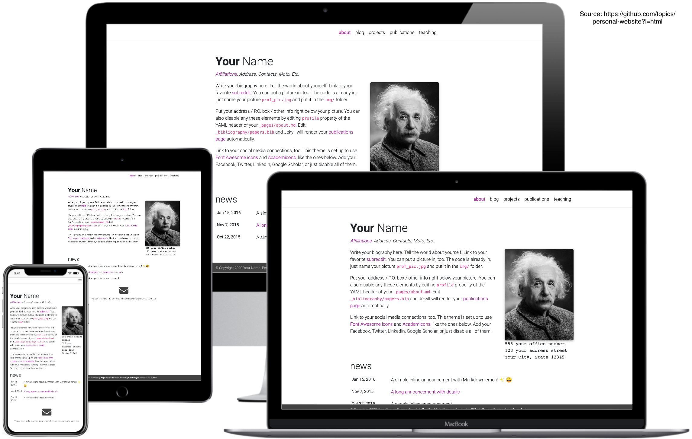
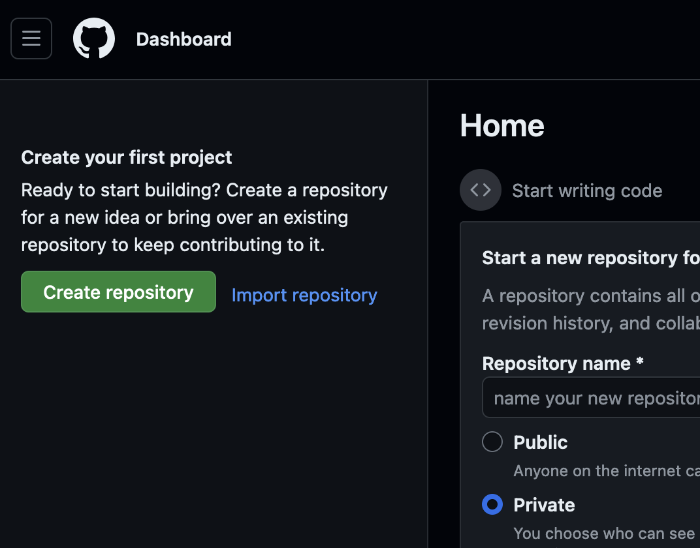
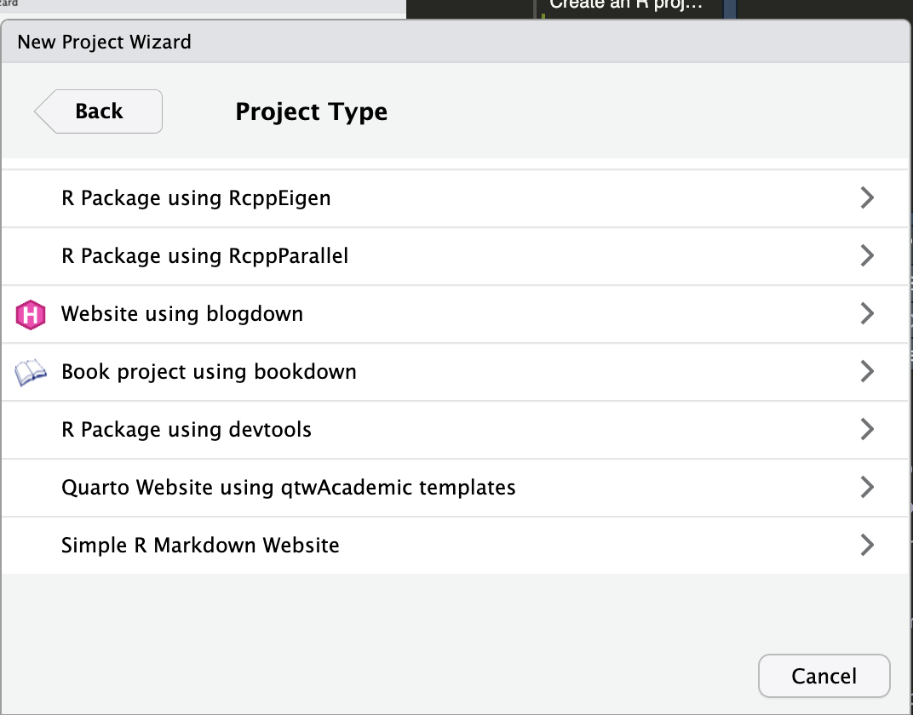
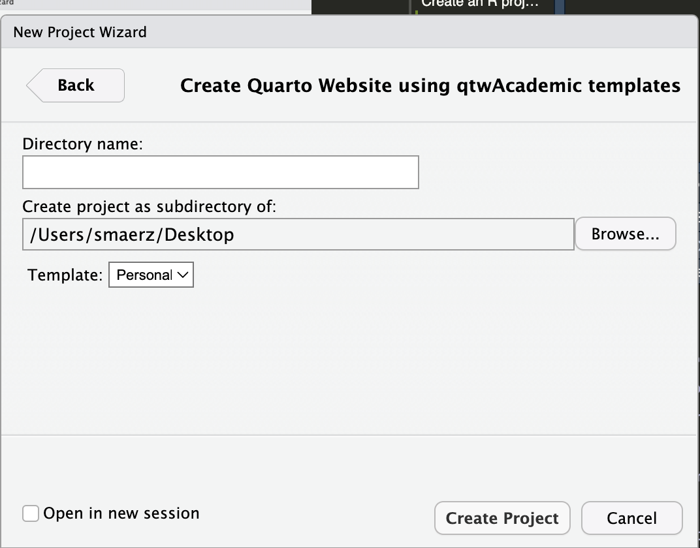
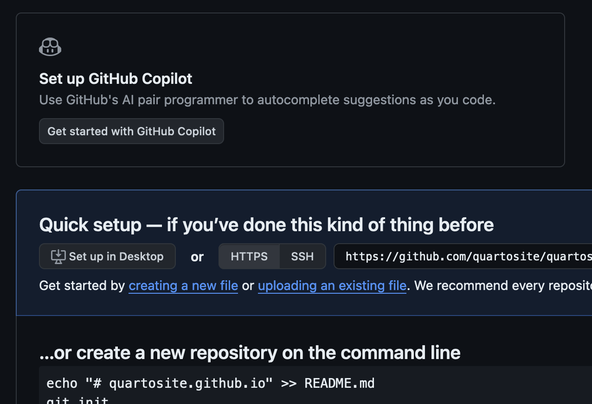
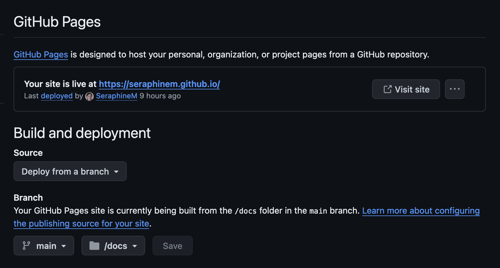

install.packages('qtwAcademic')How to code your own personal website with Quarto in less than 30 minutes and for free!
This tutorial provides a focused guide on how to code and publish your own personal website with Quarto and GitHub. No previous knowledge required. Shouldn’t take longer than 30 minutes (basic version).

As an academic, I often feel like I am working as a freelancer. While I am not really a fan of self-promotion, it seems to be an important part of the job. Many successful academics have personal websites. By following the 8 steps below, you can create one, too.
1 Create a GitHub account and a repository
GitHub is a great platform for code sharing and collaborative research projects. You can also use it to host your personal website for free without having any previous experience with handling GitHub. It is very easy. Simply register as a new user. Be mindful when selecting your username as this will also become part of your website address. For example, my username is SeraphineM, so my personal website lives at https://seraphinem.github.io. Once you created your GitHub account, click on the left side the green button labelled Create repository (see screenshot below). Give this repository the exact same name you used as username and add .github.io. For example, in my case I called the repository SeraphineM/SeraphineM.github.io.

2 Install R and R Studio
3 Install the qtwAcademic package
Open R Studio and install the gtwAcademic package by copying the following command into your “Console” (the window at the bottom left):
If you had an older version of R Studio already installed on your laptop, you might need to install also Quarto (latest R Studio versions have Quarto included).
4 Create a R project for your website
In R Studio go to,
File > New Project > New Directory
Scroll down and choose
Quarto Website using qtwAcademic templatesGive your project a directory name, pick a location on your laptop, and select the template
Personalfrom the drop-down menu.
 
5 Adjust and personalize the template
In order to adjust and personalize your website, the most important files for you to look at are:
index.qmd_quarto.yml- the
index.qmdfiles in the subfolders for the different sections of your website.
The structure of these files is generally quite intuitive and adjusting/adding content is fairly straightforward. All .qmd files give you the choice between source or visual mode (top left menu), the latter being similar to a word.doc environment. One first thing you should probably do is replacing the profile.png picture with a nice pic of youself.
For some more instructions including how to add additional pages, look for example here. For changing the style of your website, change in the _quarto.yml the name of the theme (scroll down to the end of the script). Quarto provides many themes and offers a lot of flexibility to tailor your website to your needs. It is also a good idea to check out the source code of other quarto websites, for example look here. I also find this more detailed tutorial very helpful.
6 Click Render and have a first look at your future website
Once you have done some adjustments to the index.qmd files and picked your theme in the _quarto.yml file, go to the main index.qmd file and click Render (top middle menu). This will build a local version of your new website via your browser. Looks nice, doesn’t it?
7 Upload your R project to GitHub
Clicking Render in your R Studio project builds your website only locally. In order to get it published online, you need to upload it to your previously created GitHub repository. However, it is really imortant that you do the following:
- click one last time
Renderbefore uploading it to make sure you have the latest version of your website online (GitHub cannot render). - select the
Terminal(bottom left in your R Studio project), add the linetouch .nojekyllhere and press enter. This tells GitHub not to mess with your already configured website.
Then, go to your repository and click on uploading an existing file (see screenshot below). Drag all the files in your main website folder (all!) into the field on GitHub and, after they are all uploaded, click commit changes at the bottom of the page.

8 Publish it!
One last step before your website goes online: once you commited the changes to your GitHub repository, click on settings (top menu), then pages (side menu), and configure in the section Branch main and /docs (see screenshot below) and click Save. After a few minutes, you should be able to see your website deployed in the first section. Click on visit site to have a look and enjoy, well done! 🎉
